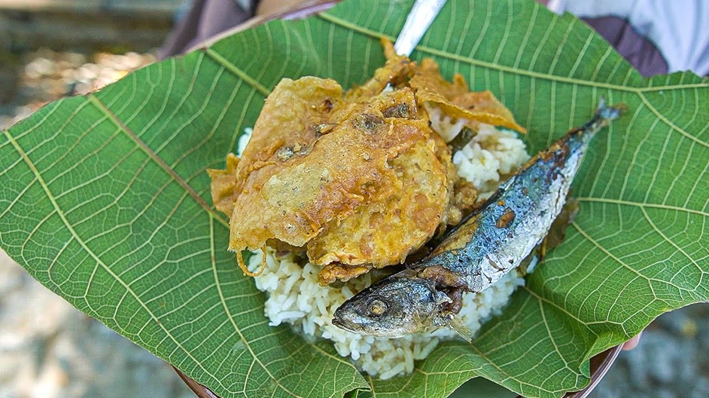

15 Makanan Unik Khas Banyuwangi,
Banyak Yang Unik,
Salah Satunya Sego Tempong
6.Rawon

Rawon adalah makanan khas Banyuwangi yang terbuat dari daging sapi yang dimasak dengan bumbu kluwek sehingga menghasilkan kuah berwarna hitam pekat.
Rawon biasanya disajikan dengan nasi putih, tauge, telur asin, dan kerupuk sebagai pelengkapnya.
Rasanya yang gurih dan lezat membuat rawon menjadi salah satu makanan favorit di Banyuwangi.
Baca Juga Tentang Resep Rawon
Penyajian rawon biasa dilengkapi dengan nasi putih, taburan kecambah, sambal dan kerupuk udang. Rawon enak dinikmati kapan saja.
7.Sate Lalat
Sate lalat adalah makanan khas Banyuwangi yang terbuat dari daging ayam atau bebek yang dipotong kecil-kecil, kemudian ditusuk dengan bambu kecil dan dibakar di atas arang.
Yang membuat sate lalat berbeda dari sate lainnya adalah ukurannya yang sangat kecil, sehingga terlihat seperti lalat yang sedang hinggap.
Sate lalat biasanya disajikan dengan bumbu kacang yang gurih dan pedas.
Rasanya yang unik dan lezat membuat sate lalat menjadi salah satu makanan favorit di Banyuwangi.
Baca Juga Tentang Resep Sate Lalat
Sate lalat ini biasanya disajikan dengan bumbu kacang yang gurih dan pedas. Rasanya yang unik dan lezat membuat sate lalat menjadi salah satu makanan favorit di Banyuwangi.
8.Sego Gunung

Segogunung adalah makanan khas Banyuwangi yang terdiri dari nasi putih yang disajikan dengan berbagai lauk pauk seperti ayam goreng, telur balado, tempe goreng, tahu goreng, dan sambal.
Yang membuat segogunung berbeda dari nasi pada umumnya adalah penyajiannya yang disusun menyerupai gunung.
Segogunung biasanya disajikan dengan lalapan seperti kemangi, mentimun, dan daun selada.
Rasanya yang lezat dan menggugah selera membuat segogunung menjadi salah satu makanan favorit di Banyuwangi.
Baca Juga Tentang Resep Segogunung
Segogunung ini biasanya disajikan dengan lalapan seperti kemangi, mentimun, dan daun selada. Rasanya yang lezat dan menggugah selera membuat segogunung menjadi salah satu makanan favorit di Banyuwangi.
9. Uyah Asem Pitik
Uyah asem pitik adalah makanan khas Banyuwangi yang terbuat dari ayam kampung yang dimasak dengan bumbu uyah asem (gula merah, asam jawa, bawang merah, bawang putih, cabai, dan garam) sehingga menghasilkan rasa yang manis, asam, dan pedas.
Uyah asem pitik biasanya disajikan dengan nasi putih hangat dan lalapan sebagai pelengkapnya.
Baca Juga Tentang Resep Uyah Asem Pitik
Rasanya yang lezat dan menggugah selera membuat uyah asem pitik menjadi salah satu makanan favorit di Banyuwangi.
10. Pindang Koyong
Pindang koyong adalah makanan khas Banyuwangi yang terbuat dari ikan tongkol atau ikan kembung yang dimasak dengan bumbu pindang (asam jawa, cabai, bawang merah, bawang putih, dan garam) sehingga menghasilkan rasa yang asam, pedas, dan segar.
Pindang koyong biasanya disajikan dengan nasi putih hangat dan lalapan sebagai pelengkapnya.
Baca Juga Tentang Resep Pindang Koyong
Rasanya yang lezat dan menggugah selera membuat pindang koyong menjadi salah satu makanan favorit di Banyuwangi.